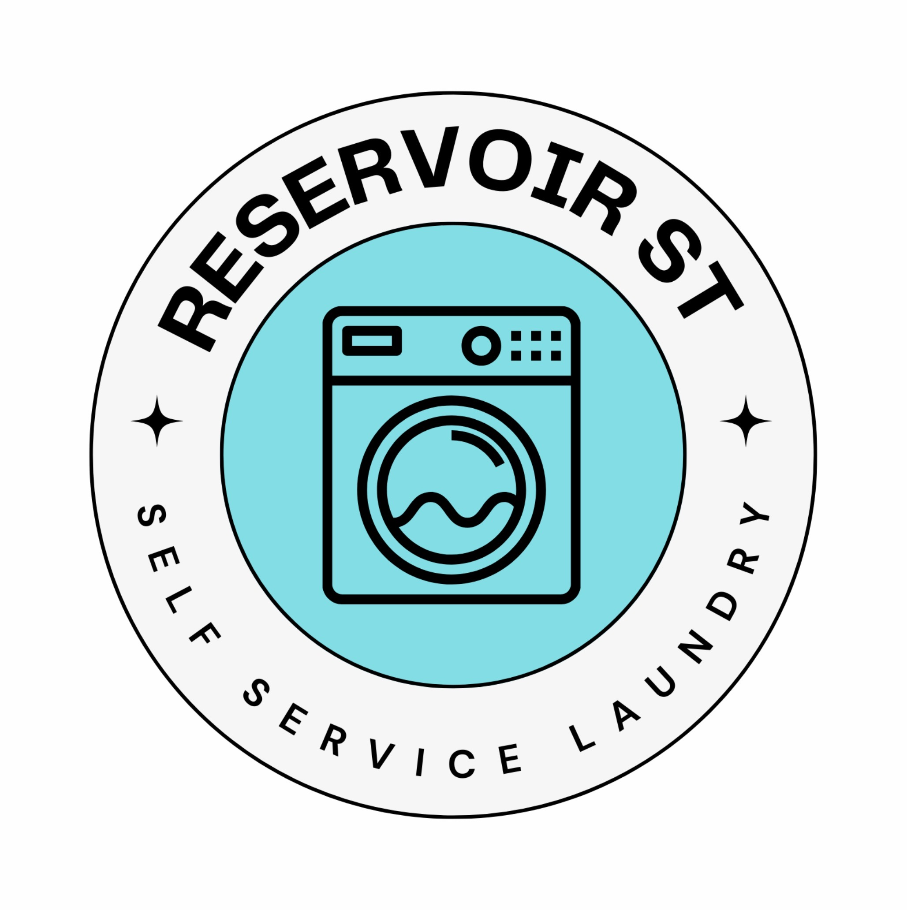

RESERVOIR STREET
SELF SERVICE LAUNDRY · SURRY HILLS
Checking connection
PREVIEW MODE
— Survey works, but answers are not stored. Connect Supabase before using with customers.
Choose your language
The survey is starting. If this message remains, please refresh the page.